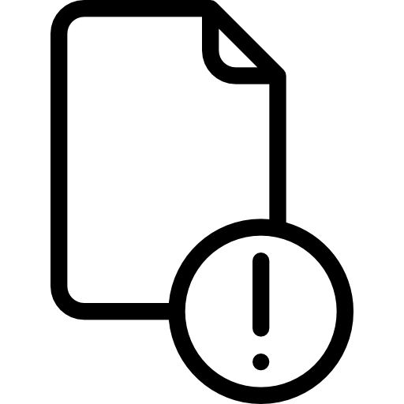

|
O professor pode visualizar todas os envios realizados pelos alunos e avaliá-los de acordo, seja por nota, feedback ou ambos. |

Assim como o estudante, o professor pode inserir um arquivo inicial na ferramenta, como um suporte para explicar a tarefa. |
|
Com o texto online, é possível a elaboração por parte do aluno, de pequenos textos, resumos, resenhas no editor de texto da própria ferramenta. |
Envio de Arquivos
Esta configuração permite o envio de qualquer tipo de documento digital. É muito utilizada em qualquer tipo de disciplina, seja de conteúdos teóricos, que exigem produção de textos; seja de cálculos, que necessitam do desenvolvimento de exercícios e até mesmo por disciplinas que podem ser demonstradas por meio de vídeo ou som, pois o aluno pode gravar uma apresentação e enviar para avaliação. |
|
Vídeo Tutorial de Configuração e Aplicabilidade: |
Dicas de UsoA ferramenta tem a peculiaridade de aparecer no quadro de notas, mesmo que não esteja configurada para receber notas.
Se desejar uma ferramenta semelhante para o uso acima, para apenas enviar arquivos, veja: Arquivo e Pasta. Roteiro escrito Aqui |